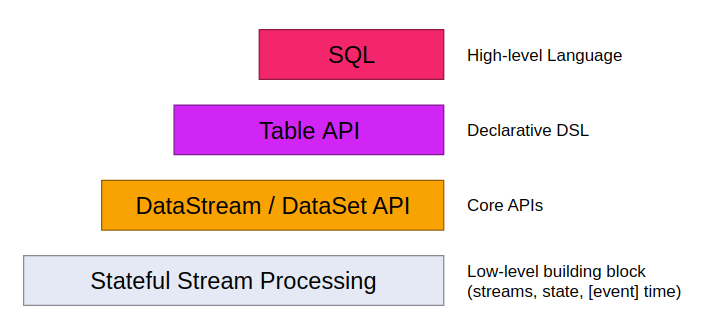

前文中给出了数据中台的分层，本文对分布式计算框架简单介绍，包括：MapReduce、Spark及Flink。
本篇是本系列第二篇
MapReduce
理解MapReduce对理解Spark有帮助，所以这里简单介绍一下，Spark与Flink才是计算方面的重头戏。
MapReduce的过程
MapReduce主要分成3个阶段：map、shuffle、reduce
map是对数据分别进行运算的过程，这像是我们用的map函数，如:
1 | const a = [1,2,3,4] |
shuffle可以理解成在本机进行分类的过程，如图：包括对map之后的结果进行partition（分区），sort （排序），combine合并溢写到磁盘
reduce是对多机的运行结果进行聚合的过程，它通过将copy将多机结果copy过来，然后merge到一起，最 后进行reduce结合操作。
一个实例：
MapReduce的任务调度
一个完整的mapreduce作业流程，包括4个独立的实体：
client：编写mapreduce程序，配置作业，提交作业;
JobTracker：协调这个作业的运行，分配作业，初始化作业，与TaskTracker进行通信;
TaskTracker：负责运行作业，保持与JobTracker进行通信;
HDFS：分布式文件系统，保持作业的数据和结果.
过程基本上看图就可以看明白，需要多说一下任务部分：
任务分配：
TaskTracker和JobTracker之间的通信和任务分配是通过心跳机制完成的。TaskTracker作为一个单独的JVM，它执行一个简单的循环，主要实现每隔一段时间向JobTracker发送心跳，告诉JobTracker此TaskTracker是否存活，是否准备执行新的任务。如果有待分配的任务，它就会为TaskTracker分配一个任务。任务执行：
TaskTracker申请到新的任务之后，就要在本地运行了。首先，是将任务本地化（包括运行任务所需的数据、配置信息、代码等），即从HDFS复制到本地。调用localizeJob()完成的。
对于使用Streaming和Pipes创建Map或者Reduce程序的任务，Java会把key/value传递给外部进程，然后通过用户自定义的Map或者Reduce进行处理，然后把key/value传回到java中。其中就好像是TaskTracker的子进程在处理Map和Reduce代码一样。执行结果：
当Job完成后，JobTracker会收一个Job Complete的通知，并将当前的Job状态更新为successful，同时JobClient也会轮循获知提交的Job已经完成，将信息显示给用户。
最后，JobTracker会清理和回收该Job的相关资源，并通知TaskTracker进行相同的操作（比如删除中间结果文件）。
Spark
spark的文章，要么过于肤浅，要么过于片面，没有很好的借鉴，这里参考官网、以前的博客、以及一些网文进行汇总。
运行模式
spark有很多的运行模式，可以单机、分布式时，可以通过內建的Standalone模式进行资源调度，也可以借助Mesos与Yarn进行资源调度。结构大于如下：
Master做调度，Woker节点负责执行任务。Master节点做高可用
RDD
理解Spark需要层RDD入手，那什么是RDD？Resilient Distributed Dataset，弹性分布式数据集。它包括：
- a list of partitions(固定在某节点里的某块连续数据):一般是一个hdfs的block对应一个partitions，一般遵循数据的本地性。
- a function for computiong each split（partitons=split从数据角度，mr的切割，算子：map、filter, reduce等等）
- a list of dependencies on other RDDS(不同算子将RDD变成不同的RDD，用于重新计算，内存中RDD不稳定缘故，出现宕机会重算)
这样看RDD有点想面向对象时的class：数据、定义在数据上的函数，并且数据还有与其他RDD的关联
看一段代码：
1 | JavaRDD<String> lines = sc.textFile("data.txt"); |
data.txt是数据,map与reduce是算子
在RDD基础之上，Spark又抽象了与DataFrame数据帧与DataStream流，这一部分先不深挖。详见:DataFrame 、DStream
算子
DAG是有向无环图的意思，要理解DAG，要从算子开始说起。
算子
大约分成了T ransformation算子与action算子，Transformation算子从一种RDD转换成另外一种，action算子则直接出的结果 。
整个Job由这些算子组成，由开始到结束，形成了有向无环图DAG。
DAG
在这些算子中，有些被成为Shuffle算子，这些算子会触发数据的重新分布，如此对不同的partition进行重组。
Spark根据shuffle路由，划分了宽窄依赖。有Shuffle算子的就是宽依赖，比如上图的GroupBy算子与Join算子，没有Shuffle算子的就是窄依赖，如map，union算子。然后以宽依赖为边界，将job划分成了多个Stage，然后将stage划分成多个task进行计算。
整体过程如下：
(1) 首先针对一段应用代码，driver会以action算子为边界生成响应的DAG图
(2) DAG Scheduler从DAG图的末端开始，以图中的shuffle算子为边界来划分stage，stage划分完成后，将每个stage划分为多个task，DAG Scheduler将taskSet传给Task Scheduler来调用
(3) Task Scheduler根据一定的调度算法，将接收到的task池中的task分给work node节点中的executor执行
Spark与MR
从上边的介绍看，可以看出Spark与MR的一点不同，Spark基本是在内存中运算的，而MapReduce通过Hadoop到本地来进行的，所以Spark会比MapReduce快一些。还有一个相同点，他们都是批处理方式，RDD的partition是一个批量数据。Spark在此基础上，发展了DataStream的流处理方式，这一块上文没有介绍到。
Structured Streaming
以上对Spark的介绍，基本都是批处理部分，它承接的是MapReduce，对于流处理部分，单独拿出来。这一部分对照后边的Flink。先简单介绍一下Spark Streaming，然后介绍最新的Structured Streaming
Spark Streaming简介
Spark Streaming获取实时数据，将它们分割成小批次，然后交给Spark引擎去处理
Spark Streaming提供一个高层的抽象：discretized stream，DStream，代表连续数据流，从源接收的输入数据流，或通过转换输入流生成的已处理数据流。在内部，一个DStream由一系列连续的RDD表示。如上图，一个DStream转换成4个RDD。在DStream上执行的任何操作都转换为对基础RDD的操作。
Structured Streaming
基本概念
将输入数据流视为“输入表”，流上到达的每个数据项都像是将新行附加到输入表中。
输入查询将生成“结果表”。在每个触发间隔（例如，每1秒钟），新行将附加到输入表中，然后最终触发结果表更新。无论何时更新结果表，更改后的结果行写入外部存储。
结果输出到外存中，有3种方式：Complete Mode（全量）、Append Model（添加）、Update Model（更新）
示例
1 | // Create DataFrame representing the stream of input lines from connection to localhost:9999 |
过期数据
这里增加了一种对过时数据处理的功能，很多情况下对于这种 late data 的时效数据并没有必要一直保留太久。比如说，数据晚了 10 分钟或者还有点有，但是晚了 1 个小时就没有用了，另外这样设计还有一个好处就是中间状态没有必要维护那么多。watermark 的形式化定义为 max(eventTime) - threshold，早于 watermark 的数据直接丢弃 。
1 | Dataset<Row> words = ... // streaming DataFrame of schema { timestamp: Timestamp, word: String } |
在 12:15 trigger 时 watermark 为 12:14 - 10m = 12:04，所以 late date (12:08, ; 12:13,) 都被接收了，所以 late data (12:04, donkey) 都丢弃了
连续处理（Continuous Processing）
在新版(2.4)的Spark中增加了一个实验性的Model，之前 Spark 是基于 micro-batch 模式的，就被很多人诟病不是“真正的”流式处理。continuous mode 这种处理模式只要一有数据可用就会进行处理。epoch 是 input 中数据被发送给 operator 处理的最小单位。这块内容官网很少，简单一提。
Flink
简介
首先 Flink 是一个纯流式的计算引擎，它的基本数据模型是数据流。流可以是无边界的无限流，即一般意义上的流处理。也可以是有边界的有限流，这样就是批处理。因此 Flink 用一套架构同时支持了流处理和批处理。其次，Flink 的一个优势是支持有状态的计算。如果处理一个事件（或一条数据）的结果只跟事件本身的内容有关，称为无状态处理；反之结果还和之前处理过的事件有关，称为有状态处理。稍微复杂一点的数据处理，比如说基本的聚合，数据流之间的关联都是有状态处理。
编程模型
基本概念

- Stateful Stream Processing：最底层，只简单提供有状态的数据流，通过ProcessFunction嵌入到DataSream Api
- DataSream/DataSet Api: 这一层是核心Api层，它提供了数据处理的基础模块，像各种transformation, join,aggregations,windows,stat 以及数据类型等等
- Table Api层，它是围绕表的声明性DSL，它可以动态更改Table（在表示流时）。 Table API遵循（扩展的）关系模型：表具有附加的schema（类似于关系数据库中的表），并且该API提供可比较的操作，例如select、project、join
、group-by、aggregate等。 SQL层。 它是定义与Table API层次之上的，但是提供的是纯SQL的查询表达式。
Flink程序的基本模块是Stream和Transformtions,Stream是（可能是永无止境的）数据记录流，而Transformtions是一种操作，它将一个或多个流作为输入，并产生一个或多个输出流。这点与spark应该类似。
一个Stream可以被分成多个Stream分区（Stream Partitions），一个Operator可以被分成多个Operator Subtask，每一个Operator Subtask是在不同的线程中独立执行的。一个Operator的并行度，等于Operator Subtask的个数，一个Stream的并行度总是等于生成它的Operator的并行度。这是spark中宽窄依赖的划分，Flink中的术语是One2One与redistributing两种模式
Flink的数据流算子、批处理算子，其中，批处理算子与saprk的很像。比如这个join操作：1
2
3
4
5
6
7
8
9public static class User { public String name; public int zip; }
public static class Store { public Manager mgr; public int zip; }
DataSet<User> input1 = // [...]
DataSet<Store> input2 = // [...]
// result dataset is typed as Tuple2
DataSet<Tuple2<User, Store>>
result = input1.join(input2)
.where("zip") // key of the first input (users)
.equalTo("zip"); // key of the second input (stores)
window
流处理中的聚合操作（counts,sums等等）不同于批处理，因为数据流是无限，无法在其上应用聚合，所以通过限定窗口(window)的范围，来进行流的聚合操作。例如：5分钟的数据计数，或者计算100个元素的总和等等。
窗口可以由时间驱动 (every 30 seconds) 或者数据驱动(every 100 elements)。如：滚动窗口tumbling windows（无叠加），滑动窗口sliding windows（有叠加），以及会话窗口session windows(被无事件活动的间隔隔开)
PS：这个窗口的概念，跟TCP中的滑动窗口有些像，而且针对的都是流。
time
事件时间 Event Time：事件的创建时间，通常通过时间中的一个时间戳来描述
摄入时间 Ingestion time： 事件进入Flink 数据流的source的时间
处理时间 Processing Time:Processing Time表示某个Operator对事件进行处理时的本地系统时间（是在TaskManager节点上）
PS：这个与spark中的WarterMark相同
state
在流处理中，有些操作仅仅在某一时间针对单一事件（如事件转换map），有些操作需要记住多个事件的信息并进行处理（window operators）,后者的这些操作称为有状态的操作。
有状态的操作一般被维护在内置的key/value存储中。这些状态信息会跟数据流一起分区并且分布存储，并且可以通过有状态的数据操作来访问。因此这些key/value的状态信息仅在带key的数据流（通过keyBy() 函数处理过）中才能访问到。数据流按照key排列能保证所有的状态更新都是本地操作，保证一致性且无事务问题。
PS：状态这部分与Spark的处理不同，spark的SS，将状态都是存储的，有complete、append、update等方式。
容错的Checkpoint
Flink 通过流回放和设置检查点的方式实现容错。一个checkpoint关联了输入流中的某个记录和相应状态和操作。数据流可以从checkpoint中进行恢复，并保证一致性（exactly-once 的处理语义）。 Checkpoint的间隔关系到执行是的容错性和恢复时间。
runtime
Flink的运行时，由两种类型的进程组成：
JobManagers： 也就是masters ，协调分布式任务的执行 。用来调度任务，协调checkpoints，协调错误恢复等等。至少需要一个JobManager，高可用的系统会有多个，一个leader，其他是standby
TaskManagers： 也就是workers，用来执行数据流任务或者子任务，缓存和交互数据流。 至少需要一个TaskManager
Client: Client不是运行是和程序执行的一部分，它是用来准备和提交数据流到JobManagers。之后，可以断开连接或者保持连接以获取任务的状态信息。
PS: 这个运行环境与spark、就很相似啦
总结
可以看出Flink与spark的异同，它们都是分布式计算，从流或批量中获取数据开始，到通过算子对数据进行变换与操作，最后得到结果存储、发布。
在对算子的划分上两者是一样的，Flink基于流的window与状态都很有特色，Spark将流当成无限大表的构思也不错，在对状态的处理上，Spark应该不如Flink一些。